CS184/284A Spring 2025 Homework 4 Write-Up
Link to webpage: (TODO) wu-yong-xuan.github.io/cs184/hw4/
Link to GitHub repository: github.com/cal-cs184-student/sp25-hw4-team-31
Overview
In this homework, we made a cloth simulation. This is done by doing physics calculations on springs between each cloth point. We made it collide with a sphere and a plane, as well as itself. We also implemented shaders which was pretty cool so we applied textures and bump/displacement maps. Also blinn-phong shading ig.Part 1: Masses and springs
So, we've done some texture mapping, made some 3D models, and implemented path tracing for lighting. Pretty neat! Our OC from the antialiasing project can now dramatically stand under the lamp, illuminated by raytraced light in a 3D cybercity. Their cape flowing majestically…wait a moment, the cape isn't flowing at all! Not only is their cape not majestic, but their clothes are just glued onto their skin like a weird tattoo. Let's fix that!
To give the gift of clothes to our 3D models, we embarked on the noble quest of implementing a cloth simulation — a magical process where point masses and springs team up to become fashion designers. Join us on Disney channel at 8pm central time as we wrangle vertices like they're rebellious spaghetti noodles, battle gravity to revolt against fate itself, and try not to crash the system when our digital cape decides it wants to be a parachute. Let's get into the fabric of reality… literally.
The first thing we needed to do to make a cloth sim, was to make the cloth itself. We approximated a cloth as a collection of point masses and springs (as we physicists tend to do). To create a flat cloth, we first populated an array with point masses, evenly spaced. Then we created a ton of springs between the masses. Each adjacent point mass in our grid has a structural spring between them. Adjacent diagonal point masses are connected by a shearing spring and point masses separated by two indices are connected by a bending spring. Because the spring force is proportional to the displacement from the rest length, all the springs have rest lengths that reflect the positions of the masses in a flat grid. The masses can also be pinned which means they won't move during the simulation. After creating our cloth made of point masses and springs, we can generate the wireframe to display.
|
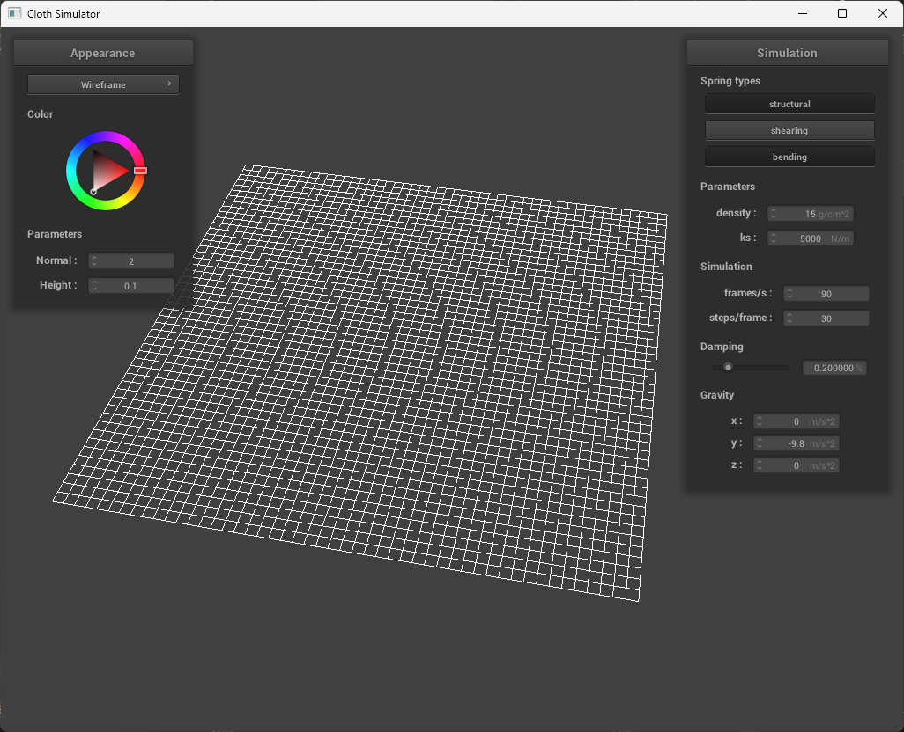
|
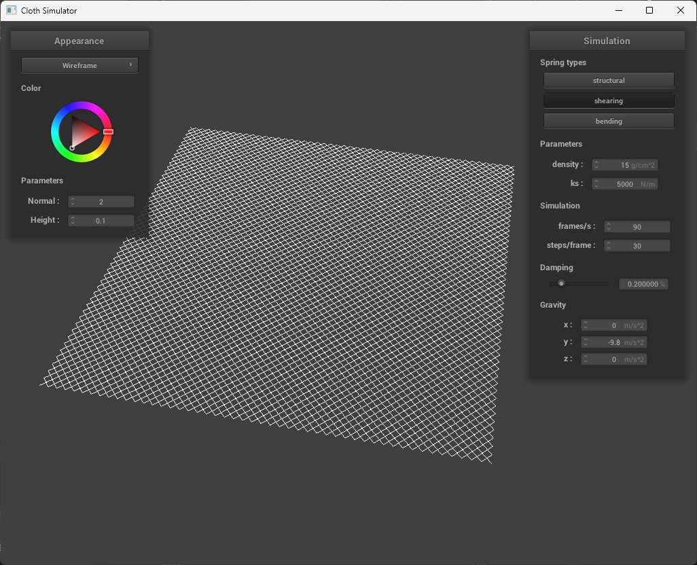
|
Part 2: Simulation via numerical integration
Wow, after creating the plane with a bunch of subdivisions, we wanna make it actually do cloth things. To do this, we have to simulate forces. Summing up external and spring forces, we can calculate the new position of a point mass using verlet integration. To keep springs from becoming unreasonably deformed, we then retroactively constrain the spring lengths to 110% the rest length, which results in a loss of energy in the system. Since the write-up specs do not require us to talk about hooke's law, let's skip that and actually talk about what we have to talk about. Namely, the spring constant.
Having a low ks creates a very light and elastic cloth.
Kind of like a microfiber cloth. While increasing the
ks value creates a really stiff cloth, kind of like a towel
Having a low density results in the cloth having less
weight. It affects the point masses rather than the spring and a lower
inertial mass means the cloth becomes more susceptible to forces (eg.
gravity). It can also be noted that decreasing the mass has a similar
effect to increasing the spring constant, which can be explained by
Newton's Laws.
Having a low damping makes the cloth act really quickly and
springy. While having a high damping factor makes the cloth act very
slowly, like it doesn't want to return to its original shape.
|
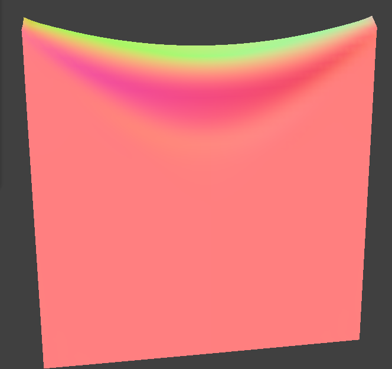
|
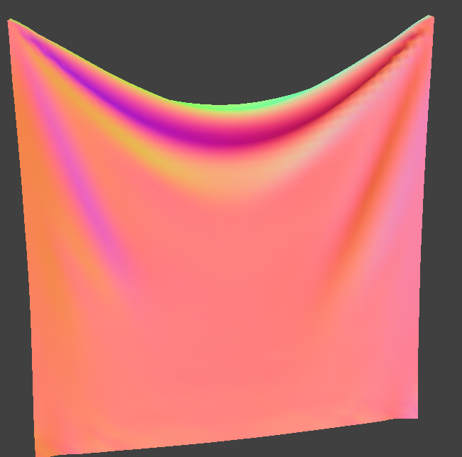
|
|
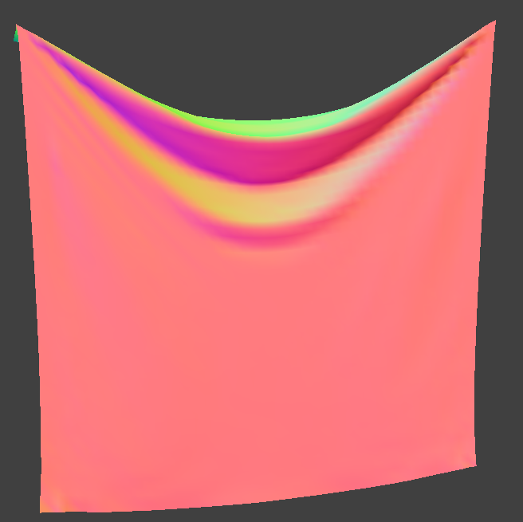
|
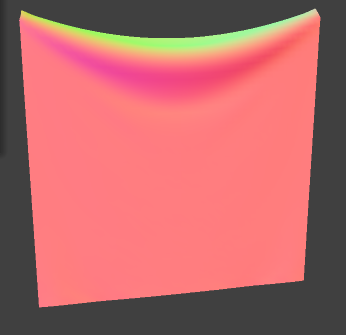
|
Part 3: Handling collisions with other objects
Wooo. But we want our cloth to interact with the worldddd. Specifically, we want it to interact with a sphere and a plane!
Collisions with a sphere
To check collisions with a sphere, for every point, we want to check if it's inside the sphere. We can easily do this by checking if the distance from the point to the center of the sphere is less than the radius or not. If it is, then at that timestep, it is inside the sphere.
Then, we can compute where it "should" be inside. Taking a ray from the center of the sphere to the point, we can normalize it and then scale it to the radius of the sphere to "project it" onto the surface.
(pm.position - origin).unit() * radius
With this new position, we can calculate the correction vector from the point's last position to this new position. We then scale it by a friction factor and set this new position as the position of the point!
Collisions with a plane
To collide with a plane is a bit more complicated. We first need to see if the point's current position is on the opposite side of the plane as the previous position. Then, if this is true, then we know that the point "crossed" the plane.
To do this, we can take a vector from the point's position to the plane's point. Then, we can dot it with the normal vector of the plane. If the sign is different from the point's position and the point's previous position, then we know that it has crossed the plane. We can then do a ray plane intersection to solve for the intersection point, and calculate a correction vector from the previous position scaled by the fiction factor.
Part 4: Handling self-collisions
Oho! A beautiful cloak drapes down from our OC, colliding nicely with the model of our character. Now to turn on some wind, but as we did that, our worst fears came alive. Our hearts pounding out of our chest, sweat dripping down our back, while a spine-chilling guitar riff echoes through the room, we noticed the one thing we dreaded: clipping. Our beautiful, pristine, majestic cape ruined by clipping into itself. We don't know of any tailors who know how to fix clothes clipping into itself. To save the money it would cost to hire an ultra specialized tailor, we implemented self collisions so our cape doesn't clip into itself.
A naive implementation of self-collisions would require N^2 runtime, which is no good, so we implemented a spatial hashing. We essentially divide our 3D space into cells and masses within the same cell are given the same hash and placed into a vector. We used cells of dimension
\(w = 3 * width / num_width_points\)
\(h = 3 * height / num_height_points\)
\(t=max(w,h)\)
And calculated the hash using the position of the cell if it was in a 3D
grid represented by a 1D vector. That is to say our hash values are
given by the following formula:
Hash = x + num_width_points * y + num_width_points *
num_height_points * z
Where x,y,z is the coordinate of the voxel the point mass is in. We iterate through all the point masses, calculate the hashes, and append the point mass to a vector in a hash table. To detect self-collisions for a point mass, we would iterate through the vector in the hash table corresponding to the point mass's hash. We check the distance between the point mass and the candidate point mass. If this distance is less than two times the cloth thickness, then we calculate a correction vector on the original mass. After doing this for all candidate point masses, we average the correction vectors and scale the resulting vector down by the simulation steps to get our final correction term we apply to the original position of the point mass. At each simulation time step, we build the spatial map and then iterate through each point mass and check for self-collisions as described.
Increasing the density will cause it to pile on itself more and fold over more times, moreover increasing the spring constant does the opposite, it causes it to kind of loosen up and spread out more as it falls.
|
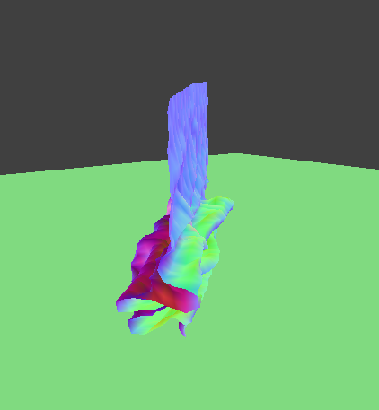
|
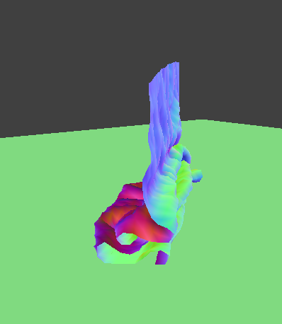
|
|
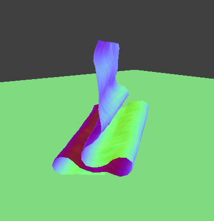
|
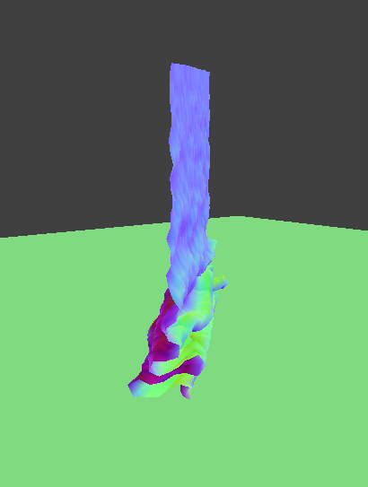
|
Part 5: Shaders
Ahh!! But we want our cloth to look nice! Let's write a shader!
A shader is simply a program that runs on the GPU. Since a GPU works in parallel, our shader program also executes in parallel! This introduces a lot of limitations, but allows us to calculate things super efficiently. Here, we explore two types of shaders, vertex shaders and fragment shaders.
Vertex shaders are shaders that operate on the vertices of a mesh, and then send the updated data to the fragment shader.
A fragment shader takes each fragment, and outputs a color for the fragment.
Together, they make sure our mesh exists in the world, and is able to be seen!
Blinn-phong shading model
The Blinn-phong shading model is a combination of 3 parts. Ambient lighting, diffuse lighting, and the specular component.
Ambient lighting is very simple. It's simple a global value denoted by
ka and Ia. The former being the ambient light
coefficient and the latter being the ambient light intensity.
The diffuse component is simple lambertian diffuse. It's a constant
kd multiplied by the light falloff, and then by the dot
product between the surface normal and the light direction.
The specular component is the same, except we raise it the power of
p. The accentuates large values and minimizes small values,
thereby creating a small specular shine.
|
|
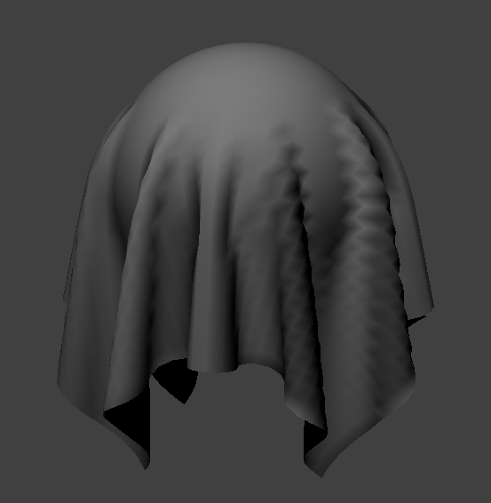
|
|
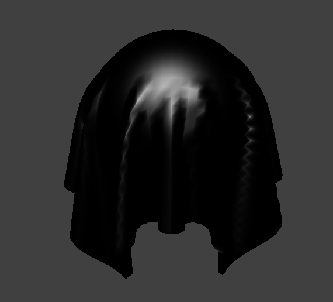
|
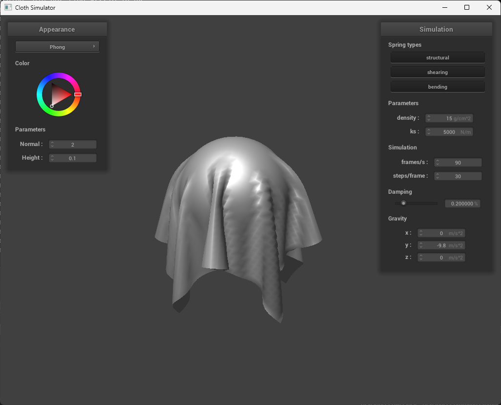
|
To do texture mapping, it's also super simple! All we need to do is sample the texture using the uv coordinates of the fragment.
To fake detail on our object, we can employ bump mapping and displacement mapping! Bump mapping is done by mapping the normal according to a new normal vector based on a texture map. By looking at how the height changes in the height map per \(du, dv\), we can apply that to our local space normal. Our local space normal is then \(-du, -dv, 1)\. We can apply a scaling factor as well. Our final normal is then the tangent-bitangent-normal matrix multiplied, which transforms vertex space to model space.
Using these normals instead, we can get a bump mapped image!
Displacement mapping is pretty simple as well. It requires us to modify the vertex shader instead. We essentially move the vertex along its normal based on the displacement value at the displacement map, scaled by a displacement factor.

Comparison of num faces
| -o 16 -a 16 | -o 128 -a 128 |
|---|---|
|
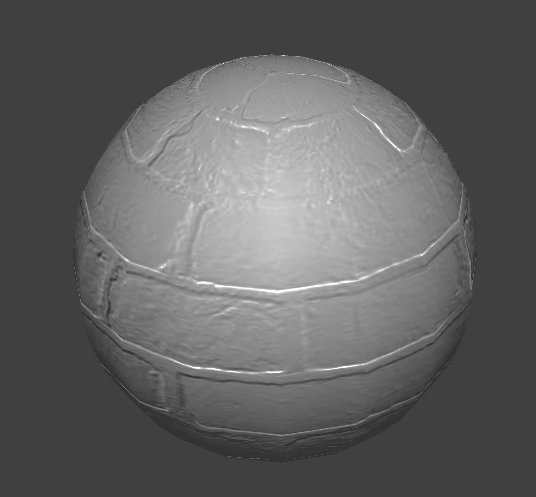
|
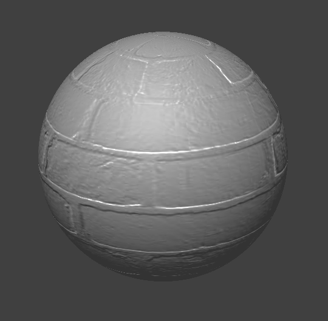
|
|
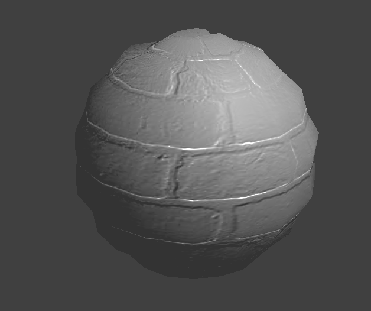
|
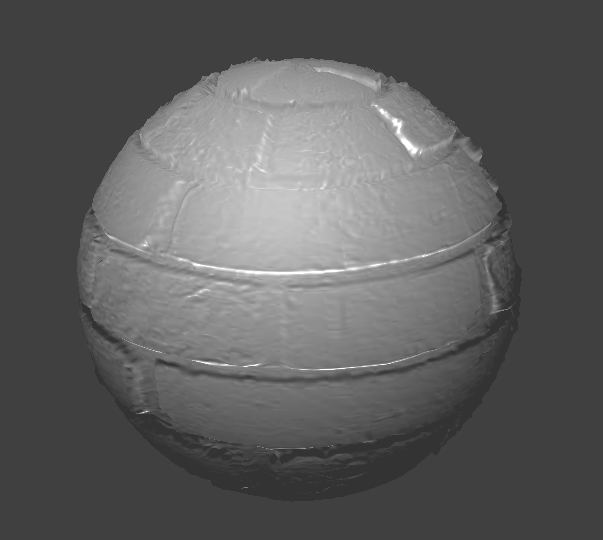
|
Plane Bump Mapping
| -o 16 -a 16 | -o 128 -a 128 |
|---|---|
|
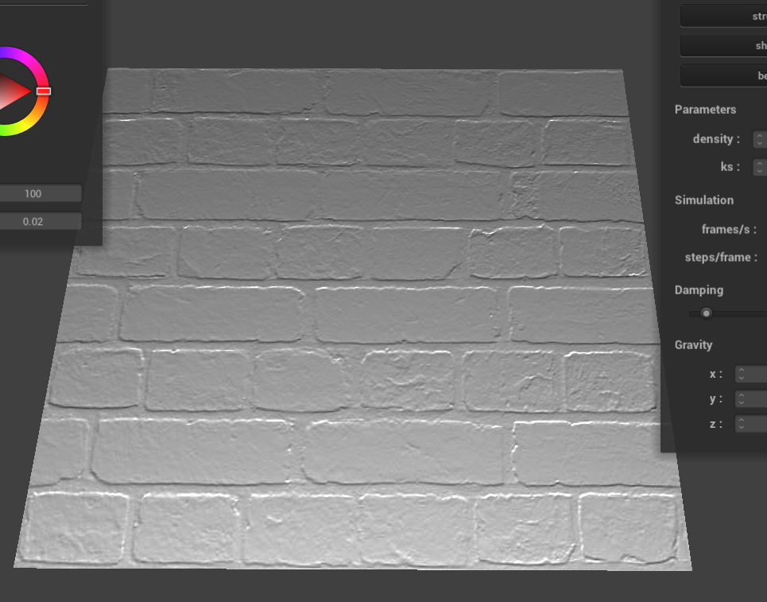
|
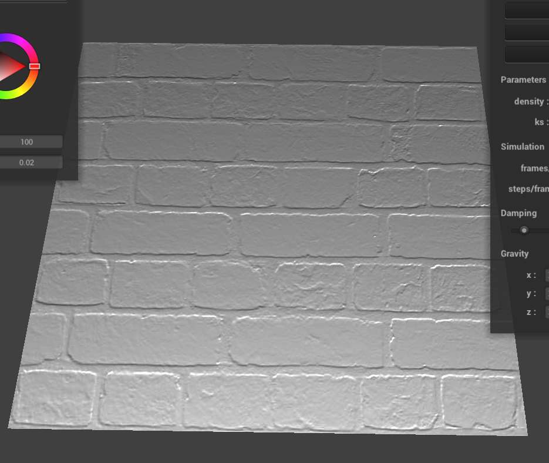
|
|
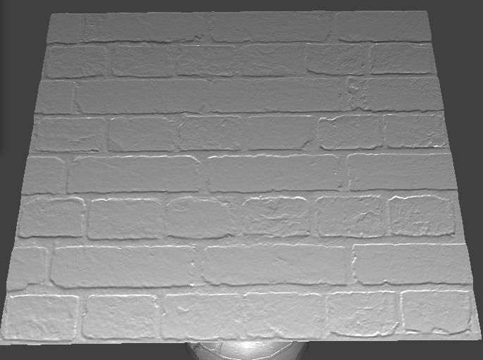
|
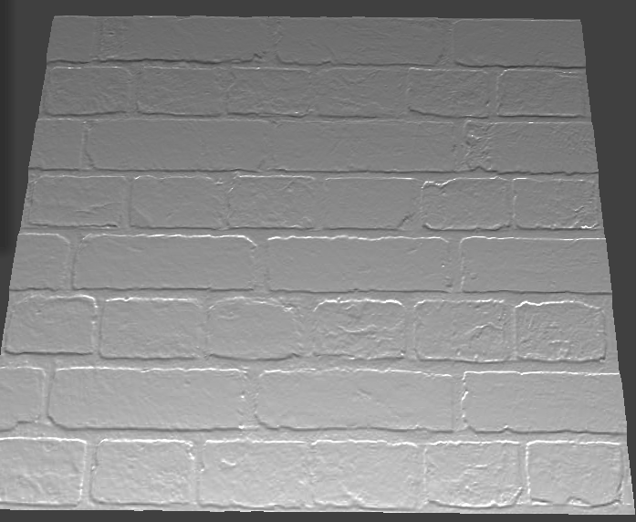
|
By having a higher coarseness, having more faces, we can get more granular detail in both the bump and displacement maps. It's especially noticeable in the displacement map
To do a mirrored surface, we just calculate the reflection vector from the camera across the surface normal, and use that to sample an environment cube map.
Custom Shader Extra Credit
In my custom shader, I implemented a toon shaded look. Taking the diffuse float component, I used that to sample a ramp texture to get color banding. After that, I lerped that with a dark and light color before multiplying it with the base texture. To get the specular component, I took the specular component in the blinn-phong shading model and stepped it with a threshold. The edge outlines were done by calculating a fresnel component from the camera position and the surface normal.